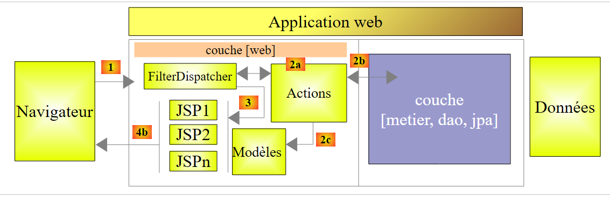
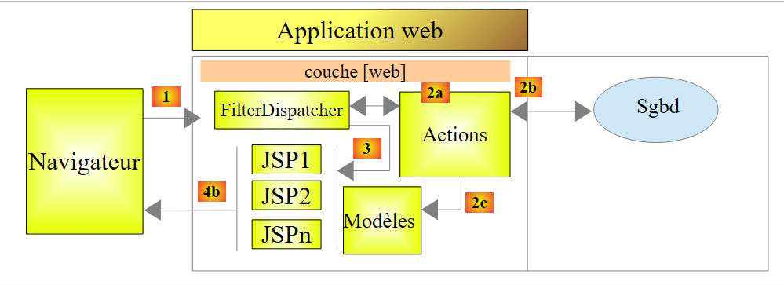
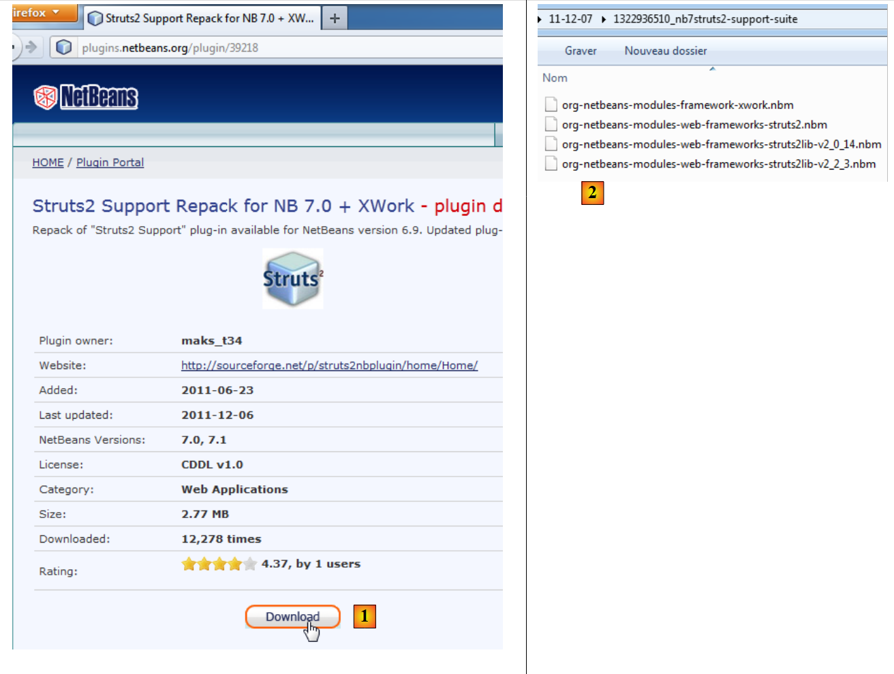

1. Introduction
Le PDF du document est disponible |ICI|.
Les exemples du document sont disponibles |ICI|.
Nous nous proposons ici d'introduire, à l'aide d'exemples les notions importantes de Struts 2. Struts 2 est un framework web qui fournit :
- un certain nombre de bibliothèques sous forme de jars
- un cadre de développement : Struts 2 influe sur la manière de développer une application web.
Les pré-requis nécessaires à la compréhension des exemples sont les suivants :
- connaissances de base du langage Java
- connaissances de base du développement web, le langage Html en particulier.
On trouvera sur le site [http://developpez.com] toutes les ressources nécessaires à ces pré-requis. J'en ai écrit quelques-unes qu'on trouvera sur le site [http://tahe.developpez.com].
Les exemples de ce document sont disponibles à l'URL [http://tahe.developpez.com/java/struts2].
Pour approfondir Struts 2, on pourra utiliser les références suivantes :
- [ref1] : la documentation de Struts 2 qu'on trouvera sur le site de Struts
- [ref2] : le livre " Struts 2 in Action " écrit par Donald Brown - Chad Michael Davis – Scott Stanlick aux éditions Manning. Ce livre est particulièrement pédagogique.
Nous ferons parfois référence à [ref2] pour indiquer au lecteur qu'il peut approfondir un domaine avec ce livre.
Le document a été écrit de telle façon qu'il puisse être lu sans ordinateur sous la main. Aussi, donne-t-on beaucoup de copies d'écran.
1.1. La place de Struts 2 dans une application web
Tout d'abord, situons Struts 2 dans le développement d'une application web. Le plus souvent, celle-ci sera bâtie sur une architectures multi-couches telle que la suivante :
 |
- la couche [web] est la couche en contact avec l'utilisateur de l'application web. Celui-ci interagit avec l'application web au travers de pages web visualisées par un navigateur. C'est dans cette couche que se situe Struts 2 et uniquement dans cette couche.
- la couche [metier] implémente les règles de gestion de l'application, tels que le calcul d'un salaire ou d'une facture. Cette couche utilise des données provenant de l'utilisateur via la couche [web] et du Sgbd via la couche [dao].
- la couche [dao] (Data Access Objects), la couche [jpa] (Java Persistence Api) et le pilote Jdbc gèrent l'accès aux données du Sgbd. Le couche [jpa] sert d'Orm (Object Relational Mapper). Elle fait un pont entre les objets manipulés par la couche [dao] et les lignes et les colonnes des données d'une base de données relationnelle.
- l'intégration des couches peut être réalisée par un conteneur Spring ou Ejb3 (Enterprise Java Bean).
La plupart des exemples donnés dans la suite, n'utiliseront qu'une seule couche, la couche [web] :
 |
Ce document se terminera cependant par la construction d'une application web multicouches :
 |
L'ensemble des couches [metier], [dao], [jpa/hibernate] nous sera fourni sous la forme d'une archive jar afin que de nouveau, nous n'ayons que la couche [web] à construire.
1.2. Le modèle de développement MVC de Struts 2
Struts 2 implémente le modèle d'architecture dit MVC (Modèle – Vue – Contrôleur) de la façon suivante :
 |
Le traitement d'une demande d'un client se déroule de la façon suivante :
Les URL demandées sont de la forme http://machine:port/contexte/rep1/rep2/.../Action. Le chemin [/rep1/rep2/.../Action] doit correspondre à une action définie dans un fichier de configuration de Struts 2, sinon elle est refusée. Une action est définie dans un fichier Xml sous la forme suivante :
Sur l'exemple précédent, supposons que l'URL [ http://machine:port/contexte/actions/Action1] soit demandée. Les étapes suivantes sont alors exécutées :
-
demande - le client navigateur fait une demande au contrôleur [FilterDispatcher]. Celui-ci voit passer toutes les demandes des clients. C'est la porte d'entrée de l'application. C'est le C de MVC.
-
Traitement
- le contrôleur C consulte son fichier de configuration et découvre que l'action actions/Action1 existe. Le namespace (ligne 1) concaténé avec le nom de l'action (attribut name de ligne 2) définit l'action actions/Action1.
- le contrôleur C instancie [2a] une classe de type [actions.Action1] (attribut class de la ligne 2). Le nom et le package de cette classe peuvent être quelconques.
- si l'URL demandée est accompagnée de paramètres de type [param1=val1¶m2=val2&...], alors le contrôleur C affecte ces paramètres à la classe [actions.Action1] de la façon suivante :
Il faut donc que la classe [actions.Action1] ait ces méthodes setParami pour chacun des paramètres parami attendus.
- (suite)
- le contrôleur C demande à la méthode de signature [String execute()] de la classe [actions.Action1] de s'exécuter. Celle-ci peut alors exploiter les paramètres parami que la classe a récupérés. Dans le traitement de la demande de l'utilisateur, elle peut avoir besoin de la couche [metier] [2b]. Une fois la demande du client traitée, celle-ci peut appeler diverses réponses. Un exemple classique est :
- une page d'erreurs si la demande n'a pu être traitée correctement
- une page de confirmation sinon
- le contrôleur C demande à la méthode de signature [String execute()] de la classe [actions.Action1] de s'exécuter. Celle-ci peut alors exploiter les paramètres parami que la classe a récupérés. Dans le traitement de la demande de l'utilisateur, elle peut avoir besoin de la couche [metier] [2b]. Une fois la demande du client traitée, celle-ci peut appeler diverses réponses. Un exemple classique est :
La méthode execute rend au contrôleur C un résultat de type chaîne de caractères appelée clé de navigation. Dans l'exemple ci-dessus, [actions.Action1].execute peut produire deux clés de navigation " page1 " (ligne 3) et " page2 " (ligne 4). La méthode [actions.Action1].execute va également mettre à jour le modèle M [2c] que va exploiter la page JSP qui va être envoyée en réponse à l'utilisateur. Ce modèle peut comporter des éléments de :
-
(suite)
- la classe [actions.Action1] instanciée
- la session de l'utilisateur
- données de portée Application
- …
-
réponse - le contrôleur C demande à la page JSP correspondant à la clé de navigation de s'afficher [3]. C'est la vue, le V de MVC. La page JSP utilise un modèle M pour initialiser les parties dynamiques de la réponse qu'elle doit envoyer au client.
Maintenant, précisons le lien entre architecture web MVC et architecture en couches. En fait, ce sont deux concepts différents qui sont parfois confondus. Prenons une application web Struts 2 à une couche :
 |
Si nous implémentons la couche [web] avec Struts 2, nous aurons bien une architecture web MVC mais pas une architecture multi-couches. Ici, la couche [web] s'occupera de tout : présentation, métier, accès aux données. Avec Struts 2, ce sont les classes de type [Action] qui feront ce travail.
Maintenant, considérons une architecture web multi-couches :
 |
La couche [web] peut être implémentée sans framework et sans suivre le modèle MVC. On a bien alors une architecture multi-couches mais la couche web n'implémente pas le modèle MVC.
Dans MVC, nous avons dit que le modèle M était celui de la vue V, c.a.d. l'ensemble des données affichées par la vue V. Parfois (souvent), une autre définition du modèle M de MVC est donnée :
 |
Beaucoup d'auteurs considèrent que ce qui est à droite de la couche [web] forme le modèle M du MVC. Pour éviter les ambigüités on peut parler :
- du modèle du domaine lorsqu'on désigne tout ce qui est à droite de la couche [présentation]
- du modèle de la vue lorsqu'on désigne les données affichées par une vue V
Dans la suite, le terme " modèle M " désignera exclusivement le modèle d'une vue V.
1.3. Les outils utilisés
Dans la suite, nous utilisons (décembre 2011)
- l'IDE Netbeans 7.01 disponible à l'URL [http://www.netbeans.org]
- le plugin Struts 2 pour Netbeans 7.01 disponible à l'URL [http://plugins.netbeans.org/plugin/39218]
- la version 2.2.3 de Struts 2 disponible à l'URL [http://struts.apache.org/]
On notera que seules les bibliothèques de Struts 2 obtenues à l'URL [http://struts.apache.org/] sont indispensables pour développer les exemples qui vont suivre. Netbeans peut être remplacé par un autre IDE (Eclipse, Jdeveloper, Intellij, ...) et le plugin Struts 2 n'est là que pour faciliter la vie du développeur. Il n'est pas indispensable lui non plus.
1.3.1. IDE Netbeans
Sur le site de téléchargement de Netbeans, nous choisissons la version Java EE :

1.3.2. Plugin Struts 2
Selon les versions de Netbeans, ce plugin n'a pas toujours été disponible. En décembre 2011, on le trouve à l'URL [http://plugins.netbeans.org]. Cette URL permet de connaître les différents plugins disponibles pour Netbeans. On peut filtrer ce que l'on cherche. En [1], on demande les plugins qui contiennent le mot " struts " dans leur nom.
 |
- on suit le lien [2]
 |
On télécharge le plugin et on le dézippe [2]. Pour l'intégrer à Netbeans, on pourra procéder comme suit :
- on lance Netbeans
 |
- en [1], choisir le menu Tools/Plugins
- dans l'onglet [2], utiliser le bouton [3]
- en [4], choisir les fichiers .nbm des plugins téléchargés. Ici, nous choisissons les bibliothèques de Struts version 2.2.3 plutôt que celles de Struts 2.0.14
- revenu dans l'onglet [2], on installe les plugins sélectionnés avec le bouton [5].
L'installation des plugins nécessite souvent le redémarrage de Netbeans.
1.3.3. Les bibliothèques Struts 2
Si on a téléchargé le plugin Struts 2 pour Netbeans, on dispose des principales bibliothèques de Struts mais pas toutes. Dans la suite, nous aurons besoin de certaines bibliothèques disponibles sur le site de Struts 2 [http://struts.apache.org/].
 |
Nous suivons le lien [1] puis le lien [2] pour télécharger le fichier zip de la distribution 2.2.3.1. Une fois la distribution dézippée, les bibliothèques nécessaires à Struts sont trouvées dans le dossier [lib] [3] de la distribution. On en trouve plusieurs dizaines et se pose alors la question de savoir lesquelles sont indispensables. C'est là que le plugin de Struts nous aidera.